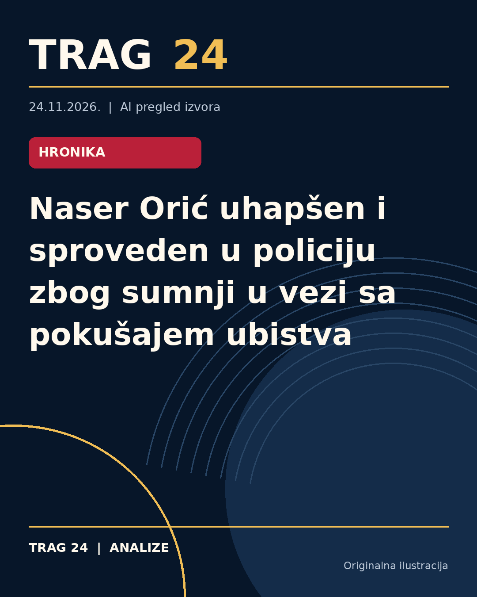

Naser Orić uhapšen i sproveden u policiju zbog sumnji u vezi sa pokušajem ubistva

ŠTA SE DOGODILO
Naser Orić je uhapšen na svom imanju na području Republike Srpske, u okviru akcije „Emisar“ koju sprovode Ministarstvo unutrašnjih poslova Republike Srpske (MUP RS) i Agencija za istrage i zaštitu (SIPA) Federacije BiH. Orić je priveden, sproveden u prostorije SIPA-e u Istočnom Sarajevu, a potom prebačen u nadležnu Policijsku stanicu Istočno Sarajevo. Pored njega, uhapšeno je još pet osoba, među kojima su bivša poslanica u Narodnoj skupštini Republike Srpske Nikolina Šljivić, braća Mesud i Mustafa Mustafić, kao i advokat Siniša Derganc.
HRONOLOGIJA
Prvo je izvršen pretres Orićevog imanja, nakon čega je on priveden. Njegovo privođenje je pratilo blokiranje prilaza policijskoj stanici žandarmerijom MUP RS. Policijska obrada uhapšenih trajala je do 30 minuta, nakon čega su oni izvedeni iz policijskih prostorija. U toku akcije pronađeni su i oduzeti predmeti, uključujući osam pištolja, 30.000 KM, 10.000 evra, mobilni telefoni i računar. Istraga je u toku, pod nadzorom Posebnog odjeljenja Tužilaštva Republike Srpske za korupciju, organizovani i najteži privredni kriminal.
ŠTA NAVODE IZVORI
Sumnja se da je Naser Orić pomagao Đorđu Ždrali, koji je u bekstvu, nakon pokušaja ubistva Koste Pandurevića. Orićeva uloga navodno uključuje pomaganje u skrivanju Ždrale i obezbeđivanje novca za promenu iskaza. Takođe, uhapšeni su osumnjičeni za izvršenje krivičnih dela u okviru kriminalnog udruženja i za sprečavanje dokazivanja u predmetu koji se odnosi na teško ubistvo u pokušaju. Iz MUP-a Republike Srpske saopšteno je da potraga za Đorđem Ždralom i dalje traje, dok se istraga intenzivira.
ŠTA JE POTVRĐENO
Potvrđeno je privođenje i hapšenje Nasera Orića i još pet osoba na području Republike Srpske i Federacije BiH. Povodom akcije su izvršeni pretresi sa oduzimanjem oružja i novca. Orić je sproveden u policijsku stanicu u Istočnom Sarajevu gde je zadržan radi dalje policijske obrade. Istraga vodi prema osnovanoj sumnji na krivična dela vezana za pokušaj ubistva i krivična dela unutar kriminalnog udruženja.
ŠTA NIJE POTVRĐENO
Nije potvrđeno da li su svi navodi o Orićevoj ulozi u pomoći Đorđu Ždrali u potpunosti tačni, niti da li je bilo drugih osoba umešanih u slučaj. Takođe, nisu objavljeni detalji o daljim koracima istrage niti o statusu Đorđa Ždrale, koji je i dalje u bekstvu.
ŠTA OSTАJE OTVORENO: Ostaje nepoznato koliko će trajati dalje postupanje nadzornih organa i koji će biti dalji pravni koraci protiv uhapšenih. Takođe, traženje Đorđa Ždrale se nastavlja, pa ostaje nejasno kada će i da li će biti dostignut. Detalji o ulozi ostalih uhapšenih, kao i kompletne informacije o pretrešenim predmetima i dokazima biće predmet daljih zvaničnih saopštenja.
Izvori
- https://www.kurir.rs/region/bosna-i-hercegovina/10171628/naser-oric-lisice-na-rukama-policija-istocno-sarajevo
- https://www.danas.rs/svet/naser-oric-spoveden-u-policiju-video/
- https://www.klix.ba/vijesti/bih/naser-oric-s-lisicama-na-rukama-doveden-u-policijsku-stanicu-u-istocnom-sarajevu/261124126
Ova analiza je pripremljena uz pomoć veštačke inteligencije na osnovu javno dostupnih izvora. Navodi izvora nisu nužno nezavisno potvrđeni.